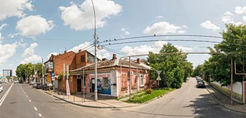

Страницы авторов "Тёмного леса"
Литературный Кисловодск и окрестности
Пишите нам! temnyjles@narod.ru
Полицмейстер Поликарп Матвеевич Безбородько негодовал. И для этого имелась веская причина. С превеликим трудом собрал людишек на важнейшее совещание. (Аж из столицы нужный человек письмичишко прислал. Сообщал, что в Европах неспокойно. Того и гляди война образуется! Опять же новые циркуляры "О пожарном уставе" и "Об изменениях некоторых статей уложения, относящихся к борьбе с пожарами и поджогами" на должном уровне не проработаны!) Из близлежащих городков и поселений приставы с помощниками, околоточные надзиратели, старшие и младшие городовые в купе с брандмейстерами прибыли. И нате!
Срочный звонок из канцелярии губернатора. Видите ли, в номере люкс П....й гостиницы обнаружено бездыханное тело миллионщика Ладо Нахвовича Тронова! И что с того? Для таких случаев сыскное отделение создано. Опять же не установлено, убит или сам себя жизни лишил. С богатеями такое частенько случается. Может в картишки состояние продул. А может на баб спустил или ещё по какой причине разорился.
Отмахнувшись, от облачённого в кожаное, шофёра служебного автомобиля, полицмейстер погрузил грузное тело в привычную карету, украшенную потускневшим ведомственным гербом.
Насмерть перепуганная горничная, поминутно вытирая платочком льющиеся слёзы, всхлипывая, твердила одно и тоже. - Велели разбудить в половину седьмого утра. Я и постучала. Потом ещё.
- Что ещё? - Перебил начальник сыскного отделения Аркадий Постышев, записывающий показания в толстую тетрадь.
- Снова стукнула. Потому как велено, не уходить, покаместь не отзовутся. А они не откликались. Я и вошла.
- Выходит дверь постоялец не запер? - Постышев пристально смотрел на девушку.
- Не-а. Ручку повернула, она и открылась. А господин на полу. Бездыханный.- Горничная не сдержалась и разревелась в голос.
Поликарп Матвеевич по-хозяйски расположился за столом управляющего отелем.
- Ну-с. Излагайте. Из-за чего такой переполох образовался? И кто самому губернатору уже успел доложить?
- Так я и телеграфировал. Прям с утра. Ведь не кто-нибудь, а сам Ладо Нахвович преставился.
- А эжели эта убийства! Тагда заведэниэ можна сразу закрывать. Ныкто здэсь жит нэ захочэт. Баятся будэт. А я банкрот. - В кабинет влетел владелец отеля Отар Дауташвили. - Извинайтэ не смог лично встреэть. Высокые чины, аж из Екатэринадара далжны приэхать. Покойнык же родом аттуда. Извэстный мэцэнат. Эсли хотитэ знать, эго имя занэсэно в "Адрэсную книгу фабрична-завадской и рэмэслэнной прамышленности всэй России"!
- А у нас он что делал? Почему я не в курсе?
- Болел шибко - Ответил за хозяина управляющий. - Даже хадж к святым мусульманским местам совершил. А теперь на воды нашинские пожаловал. Ежедневно ездил лечиться. Ванны принимал. Выходит, что не помогли. Ни Аллах, ни грязи лечебные.
Полицейский сорвался с места и бросился к апартаментам.
- Он же мусульманин. Да ещё и ходжа. По их обычаям надо земле придать до заката солнца. - Безбородько тряс за лацканы пиджака Аркадия Постышева.
- Поликарп Матвеевич. Не извольте беспокоиться. Уже того. Что полагается, сделали. И кровь на анализы и полный осмотр с фиксированием на фотокарточки. И допросы с постояльцев и обслуги.
- А делакск.... Никак не могу это слово новомодное выговорить. Отпечатки сняли?
- Так ведь это же отель. Тут пальцев, как у Жучки блох, на каждом предмете десятка по два наберётся. Да и зачем? И так ведь понятно. Помер собственной смертью. Ибо никаких следов насилия не обнаружено. Ни ножом, ни удавкой, ни тупым предметом.
- Скажи, что и ядом не травили. Горничная ведь талдычила! Дверь не заперта. Вполне могли!
- Я самолично труп нюхал - оправдывался начальник сыскного отделения. - Миндалём не пахнет, значит цианида не было. Да и доктор, привлечённый, утверждает, что иных признаков отравления не наблюдается. Вскрытие такого человека, понятное дело, никто не позволит произвести, но...
- Никаких, но! Постышев! Ты меня слышишь! Война с германцем со дня на день может начаться!
- Так отсюда до театра будущих военных действий семь дней пути. Никак не меньше. И причём здесь международное положение?
- А при том! Турки союзники германцев! Отродясь так было. А граница с ними, вот туточки, за горами. Вот и выходит, что шпионы ихние могли того, миллионщика порешить.
- Поликарп Матвеевич, вам ведь не хуже моего известно, что для подобных дел специальная контора имеется. Ранга много выше нашего. И раз от них никого здесь нет, значит...
- Делай что велено. На совесть. Дауташвили ещё раз допроси. Разузнай, не было ли у него коммерческих тёрок с покойником? Вечером подробнейший доклад на стол. Всё! Ступай с глаз долой. Слышишь мотор подъехал! Видать екатеринодарские чины пожаловали. Пойду встречать. Того и гляди сам губернатор следом прибудет.
Жены и иные светские дамы расположившись на мягких диванчиках обсуждали последние новости.
Дама бальзаковского возраста, обмахивая себя веером из перьев экзотической птицы, дала знак подружкам сесть поближе.
- Открою маленький секрет, - выдержала паузу. - У меня в Екатеринодаре имеется, скажем так, приятель. Он давеча поведал, что Ладо Нахвович не так давно праздновал в своём ресторане шестидесятилетие. Согласитесь, для миллионщика это не возраст. Нынче лекари за большие деньги любую хворь из организма враз выгоняют. Мужчине ещё бы жить, да жить.
- Сказывали, - перебила подружка, - что это черкес - Тронов нигде не учился! И по молодости работал возчиком дров. А когда война с японцем, началась, ему уже пятьдесят стукнуло. Богатей, купец, попечитель. В аулах школы за свои деньги открывал. Землякам обучение в гимназиях и институтах оплачивал. Как говорится - денег куры не клюют. А он взял да и добровольцем на фронт попросился. Правда не взяли, но зачислили в резерв. Настоящий мужчина. Одним словом - горец! Рядом с таким любая женщина...
В противоположном углу, городские мужи, открыв рты, слушали гостей из соседней области.
- Судьба, она такая. К кому как повернётся. Однажды Ладо Нахвовичу повезло. Получил подряд на строительстве Новороссийской ветви железной дороги. Стал возить шпалы для укладки рельсов. Платили достойно. Но работать приходилось! Не приведи, господи! Денно и нощно.
Черкес оказался башковитым. В скорости создал артель. И поставил дело так, что сотни людей обеспечил работой. Деньги не пропивал, а складывал копеечка к копеечке. Купил в Екатеринодаре участок. Затеял строительство дома. Когда рабочие занялись крышей понял, что изготовление кирпича и черепицы - выгодное вложение капитала. И в начале века стал хозяином кирпично-черепичного завода. Обновил и усовершенствовал производство. В итоге на промышленной выставке получил золотую медаль! За качество продукции. Посыпались заказы. Всё выполнял точно в срок. Акромя этого начал строить в городе и области жилые дома да приюты с лазаретами. Возводил в аулах мечети.
Сославшись на занятость Поликарп Матвеевич уклонился от раута в городской управе.
Прихлёбывая крепкий чай вчитывался в каждую строчку доклада представленного начальником сыскного отдела.
- Страдал многочисленными хроническими недугами. Справка врача прилагается. Деловых переговоров с местными предпринимателями и купцами не вёл. Столовался в отдельном кабинете ресторана. Опрос официантов и поваров прикреплён. Анализ блюд и продуктов на предмет обнаружения ядов произведён. Результат отрицательный. Акт экспертизы прилагается.
Вывод комиссии - Смерть наступила в следствии сильной изношенности организма и прочих естественных причин. Подписи и печать.
По настоятельному требованию прибывших родственников и господ из Екатеринодарской думы тело выдано для экстренного погребения в родном ауле усопшего.
Поликарп Матвеевич захлопнул папку. Подумал - Какая жалость, что так. Вот ежели бы - убийство! Быстренько отыскали бы одного, а лучше группу душегубов. Упекли на каторгу, а за раскрытие орден положен. Или продвижение по службе. В губернский город, а может быть даже, чем чёрт не шутит, и в столицу. Ну да ничего, вот война грянет, отличусь! Где наша не пропадала.
В Краснодаре на доме, где жил предприниматель и меценат, установили мемориальную доску.
В краевом центре, если сильно захотеть, то всё ещё можно отыскать дома, построенные при участии, и на средства этого удивительного человека.
Прототипом Ладо Нахвовича Тронова послужил Екатеринодарский меценат - Лю Нахлухович Трахов.

Главная страница сайта
Из нашей почты
Последнее изменение страницы 18 Feb 2021